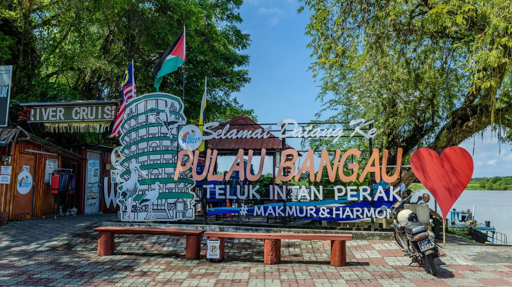

Anson Hotel is centrally located in the town of Teluk Intan.The location has the added advantage of easy access to the Leaning Tower (an architectural oddity which attracts both local and foreign visitors), bus and taxi stations, shopping complexes and banks.This modern 7 storey has been renovated and refurbished in 2016 and has been designed to cater to the needs of all travelers, both business and leisure.
Customer satisfaction rate:
Reservation progress bar:

